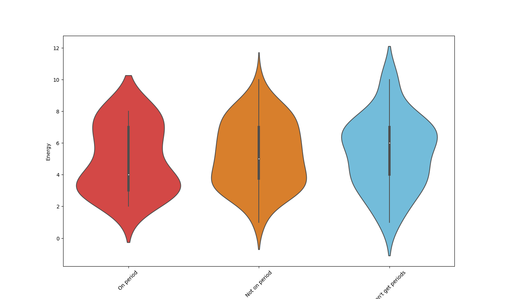

I and another student collected this data for our final project in Statistics. Our sample includes 151 respondents. We didn't make much of an attempt to make our sample accurately represent any particular population, such as Willamette or Salem - most of the people we surveyed were Willamette students, but we surveyed a few people from off campus and of different ages. We asked respondents (regardless of sex or gender) to select whether they were on their period, were not on their period, or didn't get periods, and to rate on scales from 1 to 10 their current mood, appetite, and energy levels. 46 respondents reported that they don't get periods (represented in cyan), 84 reported that they did get periods but were not currently on theirs (orange), and 21 reported currently being on their periods (red).
